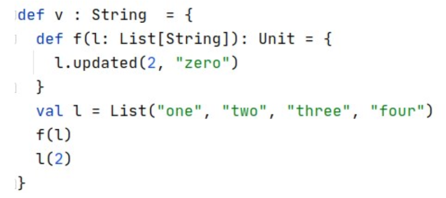

Which methods would you expect to be defined on an immutable Set datatype? (Select 0 or more)
def union(rhs : Set[A]) : Set[A]
def contains(elem : A) : Boolean
Value of v?

"three"
Which methods would you expect to be defined on an immutable Map datastructure (with two type arguments: K for the keys and V for the values)? Select 0 or more.
def get(key : K) : V
def add(key : K, value : V) : Map[K,V]